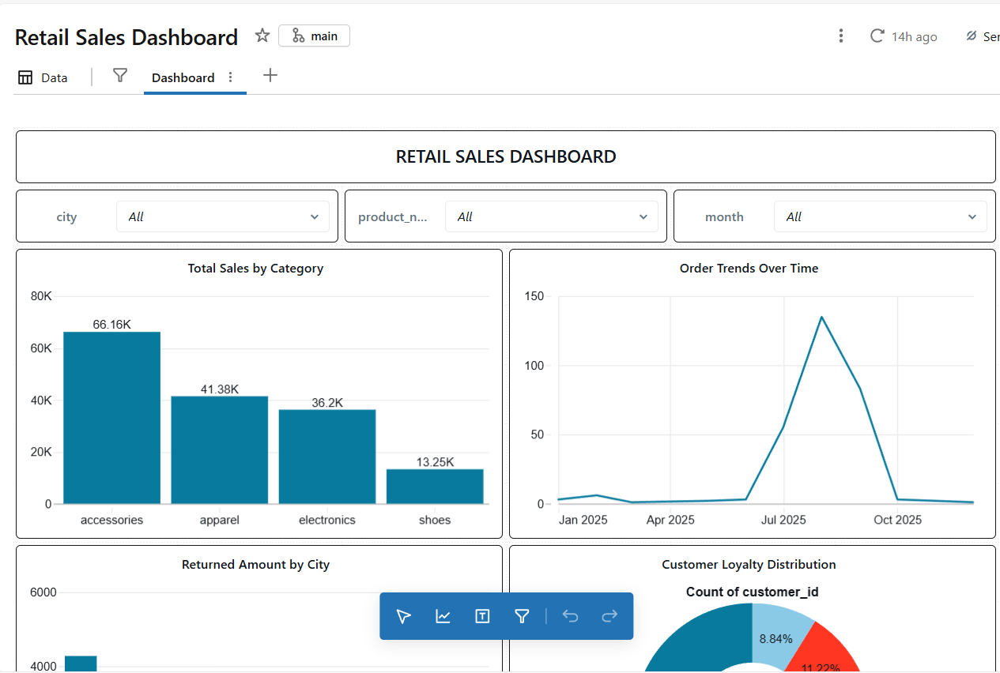

Azure-focused data engineer with hands-on experience building end-to-end ETL pipelines using
Azure Data Factory, Databricks (PySpark), ADLS Gen2, Azure SQL, and Power BI.
Snapshot:
Built production-style Azure data engineering pipelines, including a full end-to-end
COVID-19 analytics platform and Databricks Medallion architecture projects, with
secure coding and analytics-ready data models.
Projects
COVID-19 Azure Data Engineering Pipeline (Flagship)
Designed and implemented an end-to-end Azure data pipeline ingesting public COVID-19 datasets
using Azure Data Factory, transforming data via ADF Mapping Data Flows and Databricks (PySpark),
storing curated data in ADLS Gen2, and serving analytics through Azure SQL and Power BI dashboards.
GitHub Repo• ADF • Databricks • ADLS Gen2 • Azure SQL • Power BI

Retail Sales Data Engineering Pipeline (Databricks)
Built a Medallion architecture (Bronze–Silver–Gold) pipeline using PySpark and Delta Lake.
Implemented schema enforcement, data quality checks, and analytical aggregates
such as AOV and category-level revenue insights.
Analyzed 149K Uber ride records using Power BI and DAX.
Delivered KPIs such as total bookings, revenue ($51M),
average ratings, payment trends, and peak demand hours.
Completed 10+ end-to-end data engineering and analytics projects.
Built production-style Azure pipelines with secure credential handling.
Reduced reporting and quality issues through data-driven insights.
Hire Me
Actively seeking opportunities as a Data Engineer / Data Analyst.
Immediate joiner, open to relocation within Tamil Nadu.
Passionate about building scalable pipelines and analytics-ready data platforms.